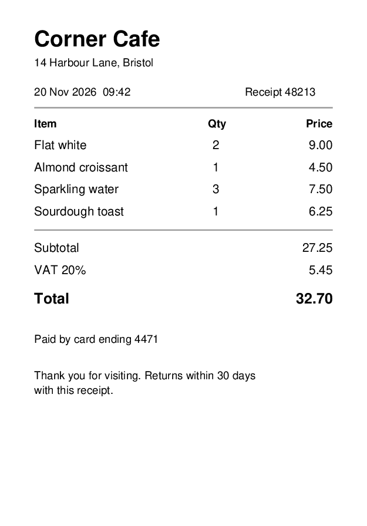
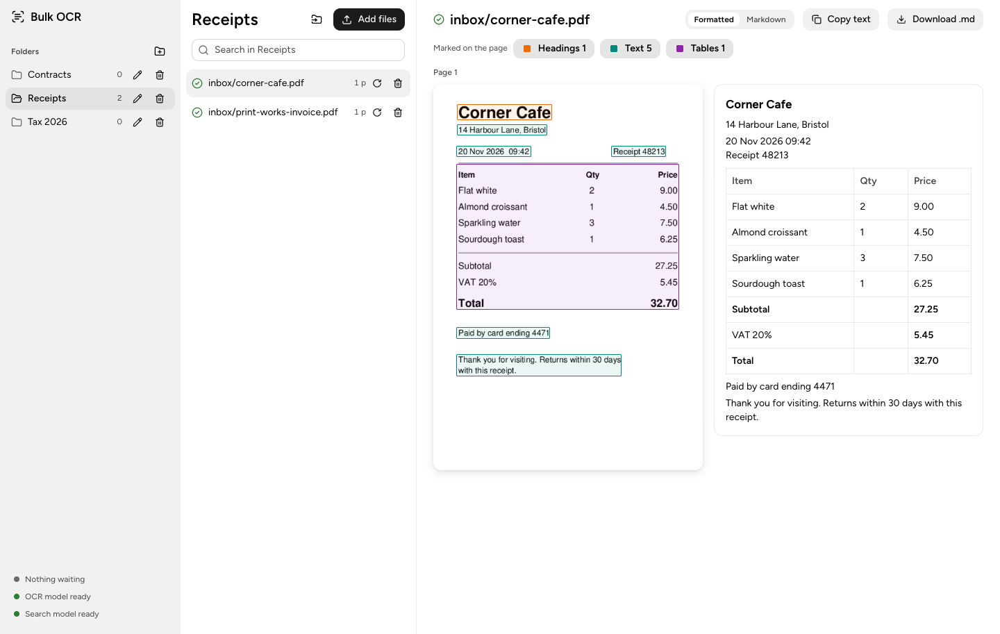
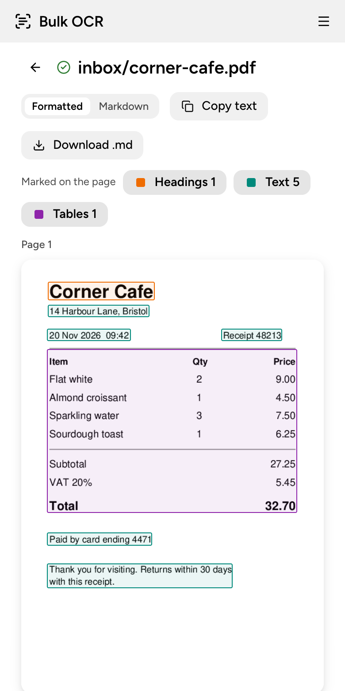

Read a pile of documents on your own machine
Bulk OCR for PDFs, scans and receipts with a local DeepSeek OCR model. Each page comes back as text, with the sections that were read marked on the page.
Free and open source. The model runs through Ollama on your computer, so no document is uploaded anywhere.

Corner Cafe
14 Harbour Lane, Bristol
20 Nov 2026 09:42
Receipt 48213
| Item | Qty | Price |
|---|---|---|
| Flat white | 2 | 9.00 |
| Almond croissant | 1 | 4.50 |
| Sparkling water | 3 | 7.50 |
| Sourdough toast | 1 | 6.25 |
| Subtotal | 27.25 | |
| VAT 20% | 5.45 | |
| Total | 32.70 |
Paid by card ending 4471
Thank you for visiting. Returns within 30 days with this receipt.
# Corner Cafe 14 Harbour Lane, Bristol 20 Nov 2026 09:42 Receipt 48213 | Item | Qty | Price | |---|---|---| | Flat white | 2 | 9.00 | | Almond croissant | 1 | 4.50 | | Sparkling water | 3 | 7.50 | | Sourdough toast | 1 | 6.25 | | **Subtotal** | | **27.25** | | VAT 20% | | **5.45** | | **Total** | | **32.70** | Paid by card ending 4471 Thank you for visiting. Returns within 30 days with this receipt.
What it does
- Reads in bulk
- Drop files on the app or point the script at a directory. PDFs, scans and phone photos are read one page at a time. Run it again and it skips what is done and retries what failed.
- Shows what it read
- Every page image gets a box on each section the model read: headings, text, tables and images. The text sits beside it, formatted or as markdown, ready to copy or download.
- Keeps kinds of document apart
- Put receipts in one folder and contracts in another. Each folder has its own files, its own page images and its own search. Rename or delete a folder from the app.
- Searches by meaning
- The text is indexed with a small embedding model, so you can search a folder for “coffee” and find the flat white. Search works in the app and from the terminal.

Run it
Get the two models: one reads pages, one powers search.
ollama pull hf.co/sabafallah/DeepSeek-OCR-2-GGUF:Q4_K_M ollama pull nomic-embed-text
Get the app.
git clone https://github.com/diwakersurya/ollama-deepseek-ocr cd ollama-deepseek-ocr bun install
Start it, then open
http://127.0.0.1:4477.bun run serve
Or skip the app and read a directory from the terminal:
bun run ocr -f Receipts ./scans bun run search -f Receipts "taxi"
Use it from your phone
The reading happens on your computer. With Tailscale, your phone, tablet or another laptop can open the same app from anywhere and add files, look at pages and search. Photograph a receipt on the phone and it is read on the computer.
Install Tailscale on the computer and on the phone, and sign in to the same account on both.
On the computer, start the app so it also answers on its Tailscale name. It prints the address for your other devices.
bun run serve --tailnet
Still on the computer, turn the link on. This is needed once.
tailscale serve --bg 4477
On the phone, switch Tailscale on and open the address that was printed. It looks like this:
https://your-computer.your-tailnet.ts.net/On an iPhone or iPad, Safari's share button has Add to Home Screen. The app then has its own icon and opens full-screen, like an installed app.
Who can open it. Only devices signed in to your Tailscale network. The app still listens on your computer alone, so nobody on the same Wi-Fi or on the internet can reach it. There is no sign-in in the app itself, so on a network you share with other people their devices can open it too. The README has the details, renaming and what to check when it does not load.

Good to know
- Ollama 0.40 or newer. Older versions cannot load DeepSeek OCR 2. Any server with an OpenAI-compatible API works too, such as llama.cpp or LM Studio.
- Private by design. The app listens only on your own machine and talks only to the model server you configure. Fonts and icons are served by the app itself.
- It says what is missing. If Ollama is not running or a model is not downloaded, the app shows the command that fixes it. Files wait and are read once it is fixed; they are not marked as failed.
- Speed. About five seconds a page on an M3 laptop, one page at a time.
- Phone photos. HEIC and TIFF are converted with a tool built into macOS, so those two formats need a Mac. PDF, PNG, JPEG and WebP work anywhere.
- The text is yours. Each document is also written as a plain markdown file in a folder on disk.